Reparto
-
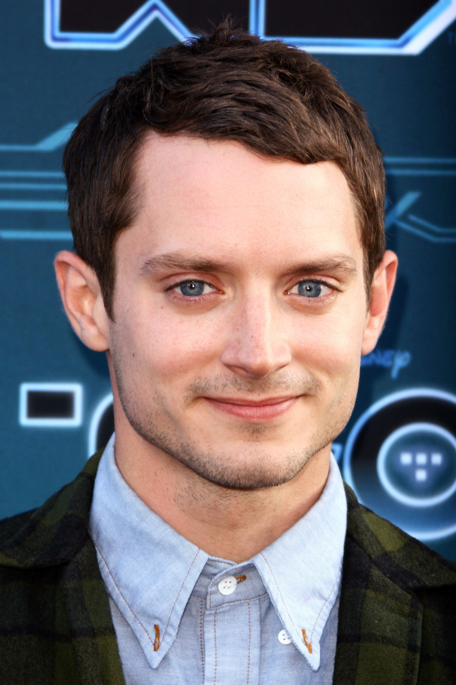
Elijiah Wood (Frodo Baggins)
Actor estadounidense conocido por su expresiva mirada. Frodo es un joven hobbit enviado en una misión para destruir el Anillo Único, cuya carga se vuelve cada vez más pesada a lo largo de la historia
-
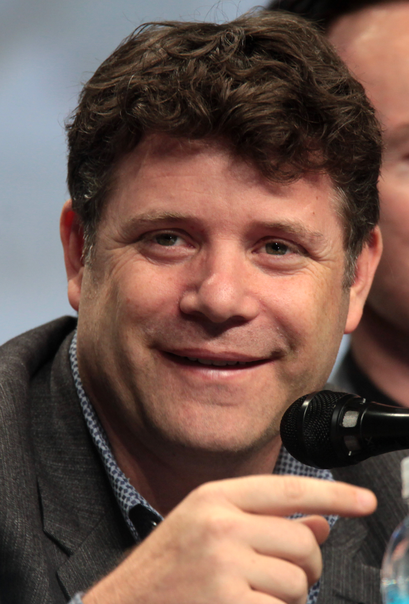
Sean Astin (Samwise Gamgee)
Actor y director estadounidense. Sam es el leal jardinero y compañero hobbit de Frodo. En esta entrega es el sostén emocional de Frodo durante el viaje hacia Mordor
-
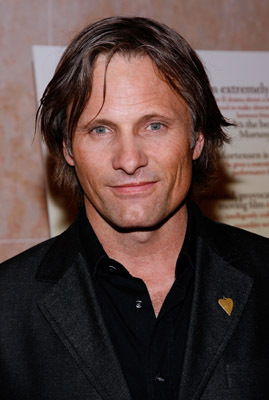
Viggo Mortensen (Aragorn)
Actor danés-estadounidense de gran presencia física. Aragorn es el heredero en el exilio al trono de Gondor, quien acude en defensa del reino de Rohan
-
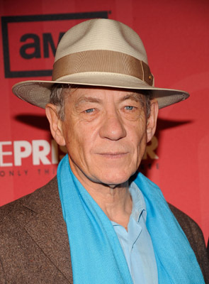
Ian Mckellen (Gandalf el blanco)
Legendario actor británico de teatro y cine. En esta película regresa transformado en Gandalf el Blanco tras su caída en la primera parte, actuando como guía y líder espiritual de la Comunidad
-
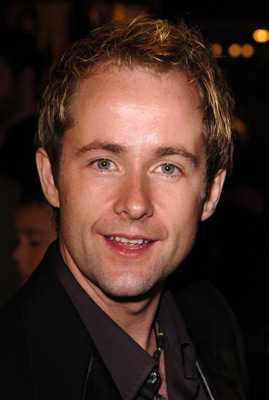
Billy Boyd (Peregrin Took)
Actor escocés. Pippin es uno de los hobbits más joviales e impulsivos. Junto a Merry queda atrapado por los Uruk-hai al inicio de la película y termina en el Bosque de Fangorn
-

Dominic Monaghan (Meriadoc Brandigamo)
Actor británico-alemán. Merry es el primo y amigo inseparable de Pippin. Ambos escapan de los orcos y encuentran al Ent Bárbol, siendo clave en el asalto a Isengard
-
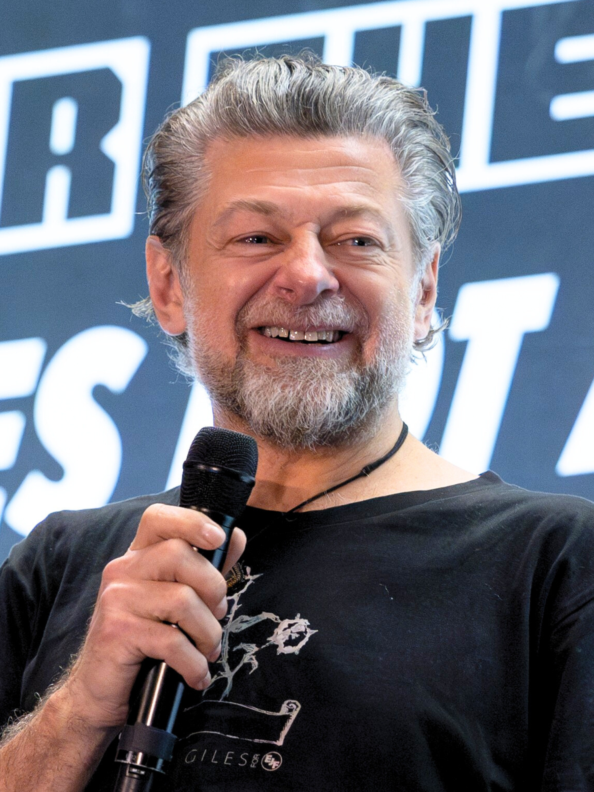
Andy Serkis (Gollum)
Actor británico pionero en la captura de movimiento. Serkis "interpretó" a Gollum aportando su voz y movimientos en el set, además de realizar el traje de captura de movimiento. Gollum es la antigua criatura que portó el Anillo y ahora guía a Frodo y Sam hacia Mordor con intenciones ambiguas
-
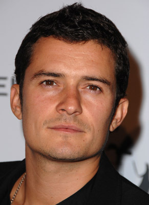
Orlando Bloom (Legolas)
Actor británico que se hizo mundialmente famoso con este papel. Interpretó el rol de Legolas, el élfo arquero de élite, ágil y mortal en combate, parte del trío junto a Aragorn y Gimli
-
John Rhys (Gimli)
Actor galés de voz potente y gran comicidad. Interpretó a Gimli y también puso la voz a Bárbol (Treebeard). Gimli es el guerrero enano del grupo, famoso por su rivalidad amistosa con Legolas
-
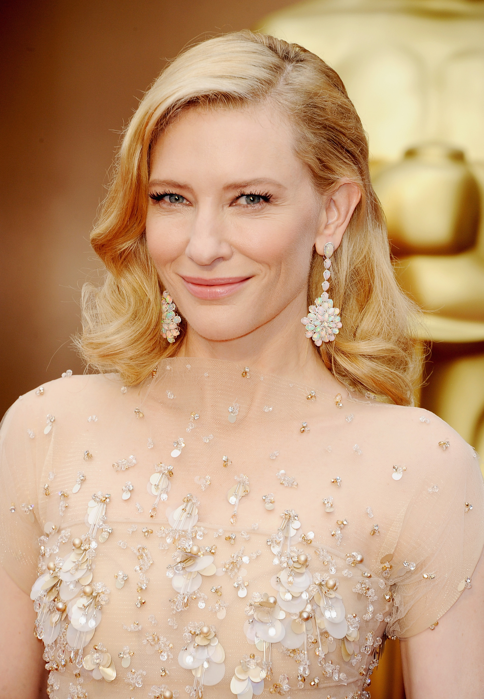
Cate Blanchett (Galadriel)
Actriz australiana ganadora del Oscar. Galadriel es la poderosa y sabia reina élfica de Lothlórien. Aparece en escenas de visión y narración, actuando como voz de la esperanza en la Tierra Media
-
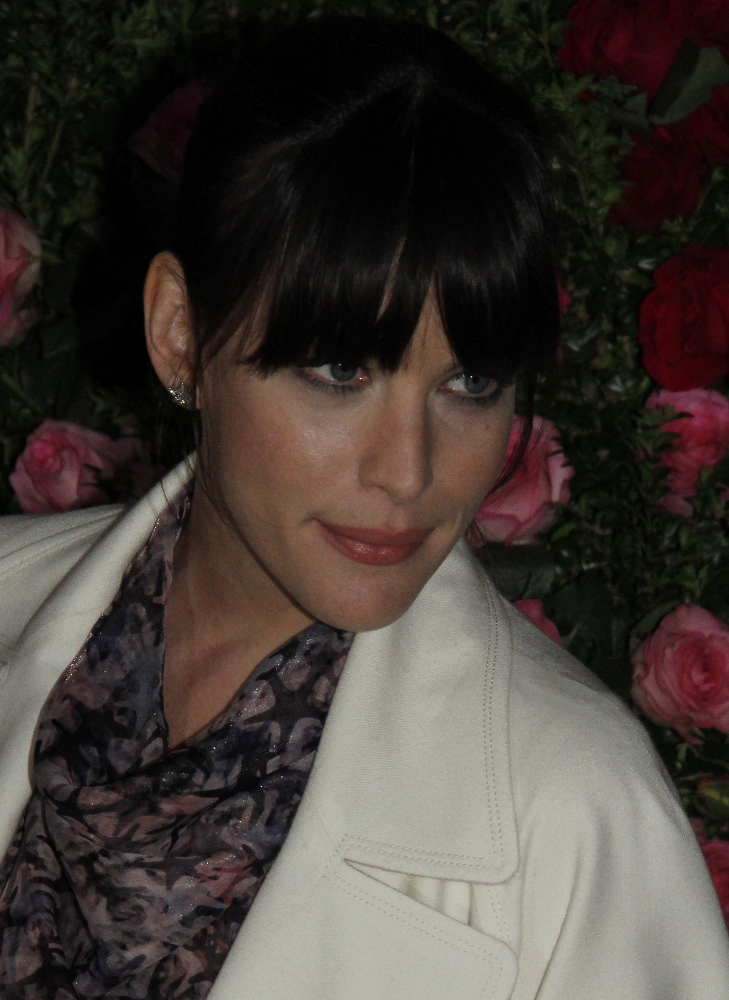
Liv Tyler (Arwen)
Actriz estadounidense. Arwen es la princesa élfica enamorada de Aragorn. En esta película enfrenta la disyuntiva de abandonar la inmortalidad élfica para quedarse junto al hombre que ama
-
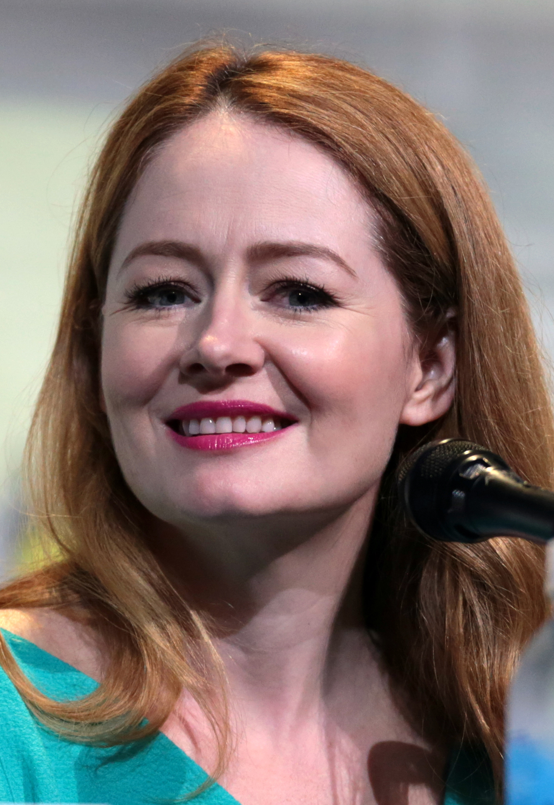
Miranda Otto (Éowyn)
Actriz australiana. Éowyn es la valiente y determinada sobrina del Rey Théoden de Rohan. Desafía las convenciones de su época y desea luchar junto a los hombres en la batalla
-
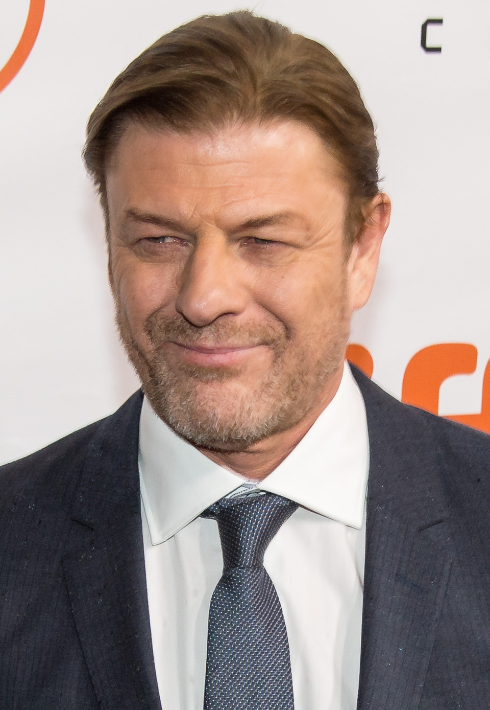
Sean Bean (Boromir)
Actor británico conocido por interpretar personajes trágicos. Boromir murió al final de la primera película, pero aparece en flashbacks en Las Dos Torres, mostrando la tormentosa relación de su hermano Faramir con su padre Denethor
-
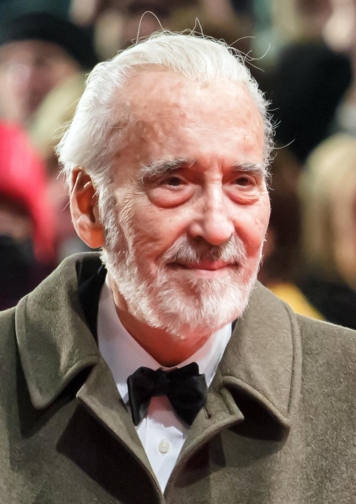
Christopher Lee (Saruman el blanco)
Veterano actor británico de enorme presencia. Saruman es el mago traidor aliado con Sauron. En esta película tiene muy poco tiempo en pantalla, principalmente en escenas de confrontación con Gandalf y como señor de Isengard
-
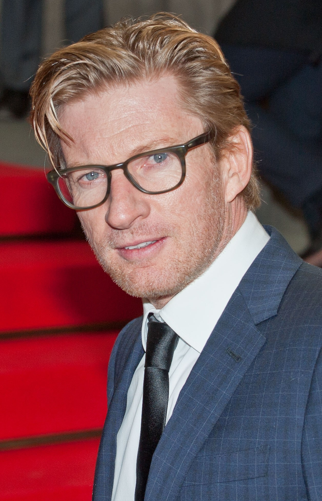
David Wenham (Faramir)
Actor australiano. Faramir es el hermano menor de Boromir y capitán de Gondor. Captura a Frodo y Sam pero, a diferencia de su hermano, logra resistir la tentación del Anillo y los libera para que continúen su misión